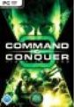

Command & Conquer 3 - Tiberium Wars [Kane Edition]

Command & Conquer 3 Tiberium Wars Kane Edition Die C&C 3: Kane Edition wird eine exklusive Bonus-DVD enthalten - mit einem Blick hinter die Kulissen, gelöschten Szenen und Outtakes, einer Reihe an persönlicher Gameplay-Strategie-Videos von den Entwicklern und vielem mehr.
Die C&C 3: Kane Edition wird außerdem exklusive Spielinhalte und neue Multiplayer-Karten sowie drei einzigartige Einheiten-Skins enthalten - eine für jede Fraktion des Spiels.
Die Fans können sich ebenso über 5 Wallpaper freuen.
März 2047. Ein gewaltiger nuklearer Feuerball explodiert hoch am Nachthimmel und läutet den dramatischen Beginn des 3. Tiberium-Kriegs ein - und damit auch die lang erwartete Rückkehr der bahnbrechendsten Echtzeitstrategie (RTS)-Franchise aller Zeiten.
Die von den Kritikern gelobte Command & Conquer(TM) (C&C)-Reihe kehrt nun mit Command & Conquer 3 Tiberium Wars(TM) (C&C 3) zurück.
Wieder einmal definiert C&C 3 den Standard des Echtzeitstrategie-Genres neu und führt dich an den Ort zurück, an dem alles begann - das Tiberium-Universum.
Im Jahr 2047 hat das Tiberium die gesamte Erde überzogen, die nun in Zonen, basierend auf dem Grad der Tiberium-Verseuchung, unterteilt ist.
Blaue Zonen, die 20 % der gesamten Erdoberfläche einnehmen, stellen die letzte Zuflucht der zivilisierten Welt dar.
Teilweise bewohnbare gelbe Zonen nehmen 50 % der Erdoberfläche ein.
In diesen, vom Krieg gezeichneten und oekologisch verwüsteten Gebieten, lebt der Großteil der Bevölkerung.
Die verbleibenden 30% des Planeten sind unbewohnbar - ein vom Tiberium geschaffenes Ödland, das von heftigen Ionenstürmen heimgesucht wird.
Diese roten Zonen erinnern mehr an die Oberflaeche eines fremden Planeten.
Der beruechtigte Kane ist zurueckgekehrt, um die Bruderschaft von Nod anzuführen und einen gewaltigen globalen Angriff gegen die Global Defense Initiative zu starten.
Es geht um die wenigen noch verbleibenden blauen Zonen auf der Erde, und nur du kannst ihn aufhalten.
Das Schicksal der Menschheit - und des Planeten - liegt in deiner Hand.
Mit atemberaubender Grafik der nächsten Generation, einer von bekannten Hollywood-Schauspielern erzaehlten epischen Story und der bekannt rasanten Spielweise wird C&C 3 den neuen Standard der Einzelspieler-RTS-Erfahrung setzen.
Wenn du dich schließlich entscheidest, deine Fähigkeiten online unter Beweis zu stellen, entfalten sich weitere innovative Features wie beispielsweise die Möglichkeit, Online-Schlachten in einen packenden Zuschauer-Sport zu verwandeln.
Willkommen zurück, Commander.
Artikel-Preis:
29.45¹ €
¹ = ohne mwst.